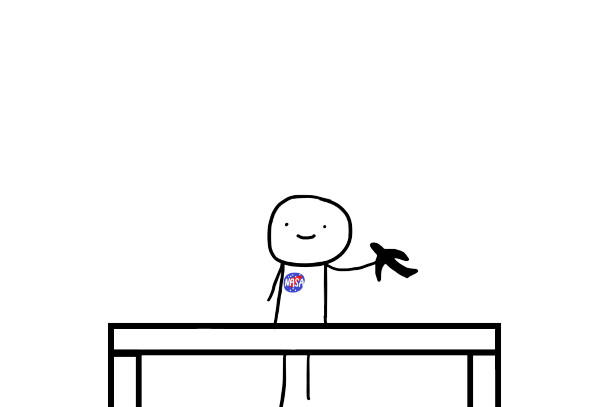
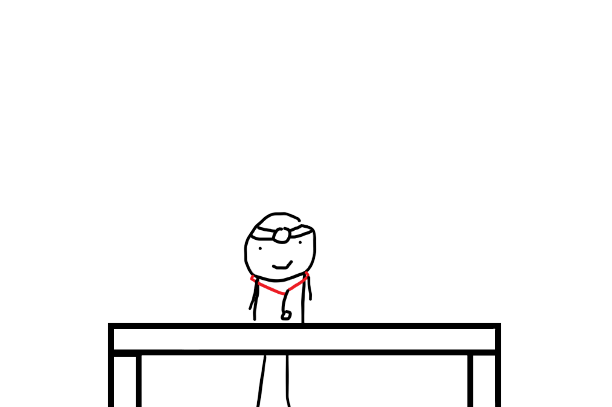
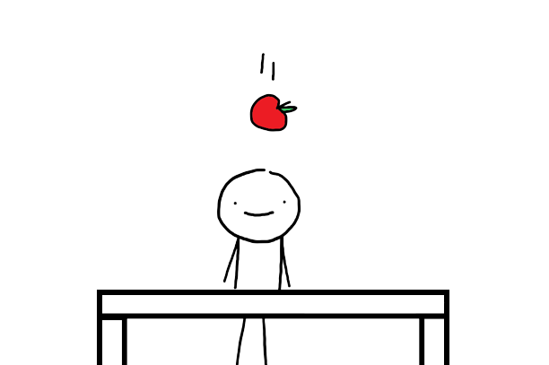

Aerospace

Aerospace Engineering! The major that flies the airplanes and does the NASA stuff.
Architecture

The building major, making things look somewhat decent. I wonder where this major was when they chose this building.
Biology Science
The type of students who saw "dissecting a frog" as interesting.
Chemistry

Yea, yea, you like to mix things, we get it. Go back to your cauldron, witch.
Civil

The "is this architecture" major. The tinkercad masters. Yes, I wonder what this major has been up to with the Broken Tech at this building.
Electrical Engineering

"I saw him vent" -some electrical major. Definitely software rejects.
Environmental Science

The ones growing a mini jungle in tech.
Finance

Math majors but more depressed lol.
Industrial Design

Kids who did not suffer enough in DDP.
Law and Society
Imagine coming to a technical school for law??? Someone didn't like DDP or CSP.......
LIU Advanced Health Professions

The major for doctors yet none of their courses are related to becoming one.
LIU PharmD
The fake doctor major. Couldn't handle people so they went to drugs.
Mathematics

Are you dead inside? Maybe this is the major for you.
Mechatronics & Robotics
Physical software and less cool.
Physics

Physics majors probably got an apple to the head before deciding.
Social Science Research

Looking to become a therapist or seeking for one within the major?
Software Engineering

The "mega chad" major.